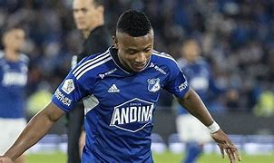
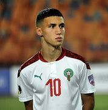
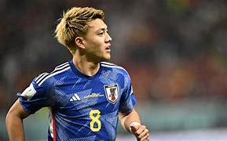
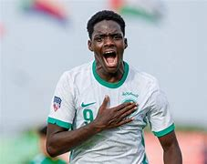

Top 5 Sub-20 de Europa

1. Warren Zaïre-Emery (Francia, 17 años)
Mediocampista del Paris Saint-Germain, destaca por su calidad técnica, liderazgo y madurez. Es titular indiscutible en su club y ya debutó con la selección absoluta de Francia. Su visión y capacidad para adaptarse a diferentes roles en el campo lo convierten en una promesa consolidada

2. Roony Bardghji (Suecia, 18 años)
Extremo del FC Copenhague, conocido por su velocidad, desborde y precisión en la definición. Ha sido clave en competiciones europeas y está en el radar de los principales clubes del continente

3. Kobbie Mainoo (Inglaterra, 18 años)
Este centrocampista del Manchester United ha impresionado con su habilidad para el orden táctico y su capacidad para reemplazar a jugadores experimentados en su equipo. También está comenzando a ganar minutos en la selección inglesa

4. Antonio Nusa (Noruega, 18 años)
Juega en el Club Brujas y ha brillado por su capacidad para sortear rivales y generar peligro desde las bandas. Fue el segundo goleador más joven en la historia de la Champions League, consolidando su lugar entre los talentos emergentes de Europa.

5. Leny Yoro (Francia, 18 años)
Defensa central del Lille, combina un notable juego aéreo con precisión en el pase y solidez defensiva. Su consistencia lo convierte en una figura clave en la Ligue 1 y es seguido de cerca por clubes de élite como el Real Madrid
Top 5 Sub-20 de América

1. Endrick (Brasil, 18 años)
Recientemente fichado por el Real Madrid, Endrick es considerado uno de los mayores talentos emergentes de Brasil. Tuvo un gran impacto en Palmeiras y ya suma experiencia en la selección absoluta brasileña.

2. Kendry Páez (Ecuador, 17 años)
Este mediocampista creativo, actualmente en Independiente del Valle, fue adquirido por el Chelsea para unirse en 2025. Con experiencia internacional a nivel mayor, es una de las mayores promesas ecuatorianas.
3. Vitor Roque (Brasil, 18 años)
Goleador del Sudamericano Sub-20 y destacado en el Athletico Paranaense, Vitor ya es pretendido por clubes europeos importantes y tiene un futuro brillante en la delantera.
4. Valentín Barco (Argentina, 19 años)
Este lateral izquierdo fue transferido al Brighton & Hove Albion tras su prometedor desempeño en Boca Juniors. Su habilidad técnica y proyección ofensiva lo colocan como un jugador clave para el futuro de Argentina.

5. Óscar Cortés (Colombia, 19 años)
Extremo de Millonarios que tuvo un excelente rendimiento en el Mundial Sub-20 con cuatro goles. Ya ha sido convocado a la selección mayor de Colombia, mostrando su potencial en el escenario internacional.
Top 5 Sub-20 de África
1. Eliesse Benshegir (Marruecos, 19 años)
Delantero destacado por su capacidad goleadora y versatilidad en el ataque. Ha tenido un impacto inmediato con el AS Monaco, consolidándose como una gran promesa del fútbol marroquí y africano.
2. Willy Semedo (Guinea-Bisáu, 18 años)
Extremo habilidoso con gran velocidad y control del balón. Atrae el interés de clubes europeos debido a su capacidad ofensiva.
3. David Datro Fofana (Costa de Marfil, 20 años)
Aunque recientemente pasó de Sub-20, sigue siendo una figura emergente. Su dinamismo y talento le han dado minutos importantes en el Chelsea y en sus cesiones europeas..

4. Bilal El Khannous (Marruecos, 19 años)
Mediocampista ofensivo con gran visión de juego y precisión en los pases. Su desempeño en la liga belga lo posiciona como un talento creciente en el continente.Por ello se incorporo al Leicester City este verano.
5. Pape Demba Diop (Senegal, 19 años)
Mediocampista completo que brilla tanto en el fútbol local como en competiciones internacionales. Su estilo combina recuperación, creación y liderazgo en el medio campo
Top 5 Sub-20 de Asia/Oceanía

1. Ritsu Doan (Japón)
Juega como extremo derecho y actualmente forma parte del SC Friburgo en la Bundesliga alemana.Ha sido internacional con la selección de Japón desde 2018, acumulando más de 50 partidos y 10 goles
2. Noah Botic (Australia)
Delantero con gran habilidad en el juego aéreo.Botic ha sido reconocido como uno de los talentos jóvenes más prometedores del fútbol mundial, habiendo sido incluido en la lista "Next Generation 2019" de The Guardian, que destaca a los 60 mejores jóvenes talentos
3. Rustam Ashurmatov (Uzbekistán)
Defensa central que brilló en el reciente torneo Sub-20 de Asia, ayudando a su equipo a clasificar al Mundial.es un futbolista uzbeko nacido el 7 de julio de 1996 en Kokand, Uzbekistán. Juega como defensa central y actualmente forma parte del FC Rubin Kazan en la Liga Premier de Rusia

4. Talal Haji (Arabia Saudita, 17 años)
Joven promesa del fútbol saudí, destacándose como delantero en el Al Ettifaq. Desde su debut, ha mostrado una notable habilidad técnica y un instinto goleador que lo han hecho destacar en la categoría sub-20.
5. Sang-bin Jeong (Corea del Sur, 20 años)
Un atacante versátil que ya ha mostrado su calidad en torneos internacionales.Actualmente, juega para el Minnesota United FC en la Major League Soccer (MLS) y también es parte de la selección nacional de Corea del Sur.